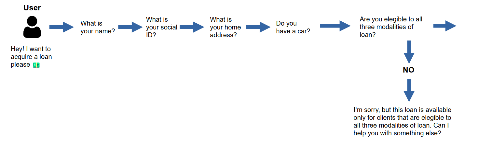

1 Introduction
This article describes a real-world situation where me and my team used data to convince our client (which is one of the biggest companies in the brazilian financial market) at the time to make a better decision. Special thanks to Guilherme Goes and Paulo Gonçalves. They both help me to present these ideas and insights to our client.
In essence, making decisions is hard. But you always make a better decision when you have data to guide you into a safer and better outcome. When you do not have data to back you up, you are basically in the dark. That is, you make the decision, but you do not know upfront what are the possible outcomes of that decision. You just hope for the best, and this is always a hard position to be in.
2 A Data Analyst should focus on understanding the business
You will probably notice that a big part of this article is dedicated to give you context and explain the business behind this example.
This is intentional! Because, one of the real values of this article is to show that we come up with a good proposal to our client, because we understood his business, and we raised some good hypothesis about this business, and by analyzing these hypothesis we come up with a good new strategy.
If you do not understand the business you are analyzing, is less likely that you will come up with a good strategy, or, a good data analysis. In other words, by having a good understanding of the business, you will likely have much better ideas on “how” to analyze the data you have.
3 Context
In essence, our client was a big brazilian bank, one of the largest in the market. The bank was using our digital plataform to sell different products and services through WhatsApp. Our job was to analyze the data generated by the platform to understand how the bank could increase their sales inside this channel.
3.1 The secured loan product
A secured loan was one of several products offered by the bank on WhatsApp. To acquire this product, the user needed to answer several questions, and also, fit into some criterias.
Depending on the type of industry you work in, you might call this as the sales flow, or, the sales path, which is the path (or the steps) that the user needs to follow to acquire the product you are selling.
Most companies want to make this path as short as possible so that the user gets to the product faster. However, we are talking about a loan, so the bank certainly needs a lot of personal and financial information about the user before it gives the loan.
So in this example, the user needed to answer a considerable amount of questions through WhatsApp to get to the final step of the sales path, that is, to acquire the loan.
Most of these questions were asking for some personal information, to check whether this particular user fitted or not into some important criterias. Most of these criterias were very standard for any type of loan, like… the person should not have any legal debts with the government. Some other criterias were purelly financial and assets related, and were also a very commom practice among banks, like… the person needs to be fully employed, he/she needs to have a car which is fully paid, and, this car needs to be a personal property of the person, i.e. it cannot be a borrowed car from another person.
3.2 The weird criteria
But one of the many criterias was a bit strange for us. Identify the exact criteria is not important for the content of this article. Let’s just say that, to be elegible for this loan, the user needed to be elegible to three different modalities.
Each modality corresponded to a different type of loan. If the user was not elegible to all of these three modalities (or types of loan), then, we would automatically rejected the user’s request for the loan.
In essence, we had a flow that worked a bit like this:

Every time a user entered our flow, we collected the social ID of this user. Because with this social ID we can use the API to check multiple informations about this person. One of the many things we checked, was whether or not this user was elegible or not to these three modalities of loan.
3.3 Why this was weird?
This was a weird criteria, because… if an user called “Ana” is elegible to modality A, then, why not offer a loan of modality A to “Ana” ? As another example, if an user “Mike” is elegible to both modalities A and B, then, why not offer both of these modalities (A and B) to him? Let the user get whatever type of loan he is elegible to, right?
Why only users that are elegible to all three modalities (A, B and C) get to decide which loan they want to get? In our head, this criteria did not made much sense, because if an user is elegible to one modality of loan, he should be able to get a loan on this modality he is elegible to.
3.4 Why this criteria existed?
But let’s face it. Despite this being a weird criteria, there certainly is a reason for it. Nothing exists without a reason. We thought this weird criteria probably existed either because:
- a MVP strategy.
- or a “risk trade-off” strategy.
The MVP strategy means that the bank included this weird criteria because it greatly simplified the development of the sales path. By simplifying the development, the bank could deliver a MVP (minimal viable product) as fast as possible, and, as a consequence, he could make a profit out of it faster.
On the other side, the “risk trade-off” means that the bank included this weird criteria, because it probably estimated that the risk is considerably higher for people that are not elegible to all three modalities. If the estimated risk is higher, then, the bank have a good reason to not offer this loan to people that are elegible to only one or two modalities.
Banks are constantly facing a trade-off between risk and profit. In other words, a secured loan like this is always a good profit opportunity. However, this profit opportunity always come at a cost, mostly in the form of risk.
That is why banks are usually very good at analysing and estimating risks. When a person looks to acquire a loan, the bank starts to analyze several factors in order to estimate how much risky is to give a loan to this person.
4 What we discovered
Regardless of which of the above options was the exact bank’s strategy, we had the hypothesis that this business rule (or this “weird criteria”) was severely affecting the sales result.
In other words, we suspected that this strategy of rejecting users that did not had all three modalities was not worth it, despite of what decisions the bank actually made to include this criteria into the sales path. But we needed to confirm this hypothesis.
Since we had the data returned from the API, we could potentially identify which users did have the three modalities, and which did not have. So I setted up a simple R script to collect the data of each user that visited our sales path in the last month from the API, and I putted this script to run through the night.
In the next day, I had all of the data locally, and we started to analyze it, investigating the metadata of each user, and potentially measuring the size of the hole that this business rule was creating.
As a result, we discovered that the bank was constantly losing a huge opportunity because of this weird criteria, or, this specific business rule. Doing some basic math, we identified that 67% of the users that visited our channel were not elegible to all three modalities. This means that 67% of the users that entered our channel were automatically rejected. We were constantly losing a huge chunk of potential leads because they did not fitted into this criteria.
So, for example, if 13,000 users entered our channel, only (1 - 0.67) x 13,000 = 4,290 of these users could potentially finish the path and acquire the loan. The remaining 8,710 users were automatically lost. They were just rejected because they did not had these three modalities.
This discovery generated some important possibilities for us:
- Are we reaching the right audience?
- Maybe we should focus in attract only people that do have the three modalities to our channel?
- Is this criteria or business-rule worth it?
5 Using data to get a better outcome
Our job was to use the data we collected, to show the bank that the potential gains of selling different types of loans to these users that did not had the three modalities, were much higher than the potential risk they offered, or than the effort to develop some improvements over the sales path to use the new strategy.
By using data, we can show the bank (in numbers) the size of the opportunity they were losing. And that is exactly what we did. Our argument was basically divided into two separate parts:
- The size of the lost;
- The size of the potential gain;
The first part of our presentation focused on the 67% number. We shown the bank that 67% of the users (which is a huge number) were constantly rejected in the flow. But this number alone does not have much flavor. As long as they are maximizing their profit, the bank does not care if he is saying “no” to 60%, 70%, 80% of the users or whatever.
That is why in the second part, we did some more basic math to estimate the potential gains they were losing by not selling to this 67% of users.
6 The new strategy
A quick recap. Each individual user that entered inside our sales path, wants to get a loan. But, this user needed to be elegible to three different types of loan to actually acquire the loan he wanted through our channel.
But, what if we change the sales path, so that:
- An user does not need to be elegible to all three modalities to acquire a loan;
- If an user is elegible to one modality, then, we should offer a loan of this modality he is elegible to;
- If an user is elegible to more than one modality, then, we should offer multiple options of loans for the user, one for each modality he is elegible to;
Using the same API data that we used to get to the 67% number, we estimated that, if we changed the sales path so that it would fit the descriptions above, then, we would increase the users coverage to 96.8%! This means that we could sell a loan to 96.8% of the users that entered our sales path, instead of only 33%.
Now, if you are thinking that 33% + 67% should be equal to 100% instead, you are forgetting that the user needs to fit into some other criterias that I did not mentioned here. In other words, 96.8 - 100 = 3.2% of users would still be rejected because they did not fit into other necessary criterias.
7 The end result
The time and effort necessary to develop this new strategy into the sales path was relatively low, and the potential gains of it were quite high! By increasing the users coverage from 33% to 96.8%, we estimated that the sales could have a potential 193% increase. Spoiler! This estimate was way low compared to the end result we got. But that is what estimates are right? They are just estimates.
So the bank was very happy with the proposal. The managers quickly accepted the idea. A low effort for a potentail high gain.
If you think about it, this new strategy we come up with was very simple. It just provided more options to the users that did not fitted into the ideal scenario for the bank. But despite it being simple, we wroted a very short, clear and effective proposal (it was just 4 slides basically). We showed the size of the hole to the bank, and we showed the size of the opportunity we could get if we implemented our new strategy, and we also showed that this new strategy was relatively easy and quick to implement.
However, the end result was enormous. On the first month after we implemented this new strategy on production, the sales increased approximately 142%, and on the second month, 400%. The sales of this specific loan have a strong seasonal component to it, that is why you have such a big variation from 142% to 400%. But nevertheless, this demonstrates the positive impact of our new strategy. This end result of 400% sales increase from our proposal was humongous.
8 Conclusion
We identified a weird criteria that our client included on the sales path. We raised some simple hypothesis about this weird criteria, and we used data to confirm or test this hypothesis.
By analysing this data, we identified a huge opportunity for our client. We then builded a simple presentation with a proposal to our client, with the numbers that we calculated from the data analysis that did.
At the end, this proposal was a huge success for our team, and for our client too that got a huge sales increase after we implemented the improvements that we proposed.